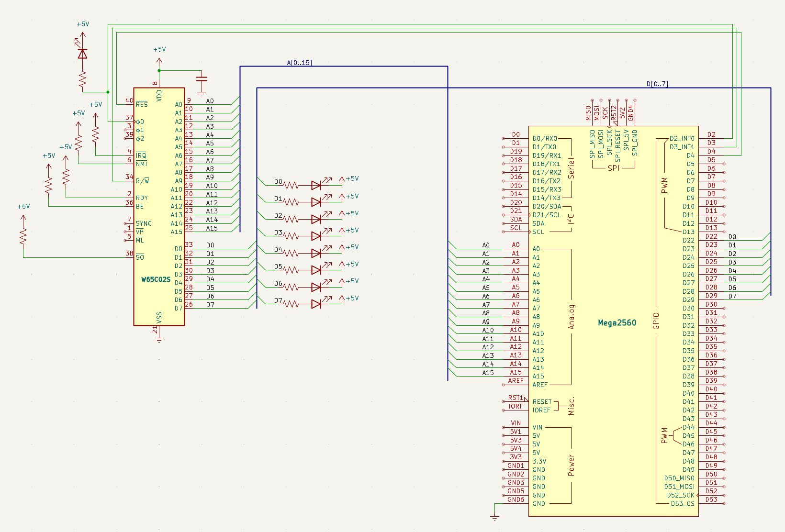

Databuss och minne
Mål
Hittills har CPU:n kunnat tala om var den vill läsa (adressbussen). Nu kopplar vi in databussen — 8 ledningar som bär den faktiska informationen mellan CPU:n och minnet. Utan databuss kan CPU:n inte hämta instruktioner och är helt blind.
Vi kopplar också in R/W-signalen (pin 34). Den talar om ifall CPU:n vill läsa (HÖG) eller skriva (LÅG). Arduinon använder denna för att veta om den ska skicka data till CPU:n eller ta emot.
Arduinon blir nu en minnesemulator: en array ram[1024] lagrar data, och i varje klockcykel kollar Arduinon adressen och R/W — om CPU:n läser, lägger den ut rätt byte på databussen via PORTA. Om CPU:n skriver, läser Arduinon av vad som skrevs.
Vi laddar ett minimalt 6502-program på $8000: en enda NOP-instruktion ($EA) som gör ingenting och går vidare till nästa adress — vilket också är NOP. Resultat: CPU:n loopar för evigt, och vi kan följa varje steg i seriemonitor.
Nya komponenter
Databussen är den första känsliga kretskopplingen i projektet: åtta 100Ω-motstånd som skyddar mot busskollisioner mellan CPU och Arduino, plus en kopplingstråd för R/W-signalen som talar om vem som skickar data åt vilket håll.
| Antal | Komponent |
|---|---|
| 8 | 100 Ω motstånd (databuss-skydd) |
| 1 | Kopplingstråd (R/W) |
Kopplingsschema
Här ser du hela kopplingen på en bild — alla komponenter och ledningar precis som de ska sitta på kopplingsdäcket.

Kopplingar
Alla kopplingar för detta steg — från strömmatning till signaler. Varje pinne, vart den går, och varför.
| Pin | Signal | Kopplas till | Varför |
|---|---|---|---|
| 8 | VDD | +5V | Strömmatning — CPU:ns driftspänning |
| 21 | VSS | GND | Systemjord — sluten krets |
| 37 | PHI2 | Arduino D2 | Klockingång — Arduino skickar fyrkantsvåg |
| 2 | RDY | +5V via 10kΩ | Ready — HÖG = CPU får köra. Utan denna stannar CPU:n |
| 4 | /IRQ | +5V via 10kΩ | Interrupt request — HÖG = inget avbrott |
| 6 | /NMI | +5V via 10kΩ | Non-maskable interrupt — måste vara HÖG |
| 36 | BE | +5V via 10kΩ | Bus Enable — HÖG = bussarna aktiva. Utan denna är CPU:n bortkopplad! |
| 38 | /SO | +5V via 10kΩ | Set Overflow — avaktiverad |
| 40 | /RESET | Arduino D4 | Kontrollerad reset — Arduino håller CPU:n i reset tills vi är redo |
| 9–16 | A0–A7 | Arduino A0–A7 | Låga adressbyte — läses via PORTF |
| 17–20, 22–25 | A8–A15 | Arduino A8–A15 | Höga adressbyte — läses via PORTK |
| 34 | R/W | Arduino D3 | HÖG = CPU läser, LÅG = CPU skriver. Arduino måste veta detta |
| 33 | D0 | Arduino D22 via 100Ω | Databit 0 (LSB) |
| 32 | D1 | Arduino D23 via 100Ω | Databit 1 |
| 31 | D2 | Arduino D24 via 100Ω | Databit 2 |
| 30 | D3 | Arduino D25 via 100Ω | Databit 3 |
| 29 | D4 | Arduino D26 via 100Ω | Databit 4 |
| 28 | D5 | Arduino D27 via 100Ω | Databit 5 |
| 27 | D6 | Arduino D28 via 100Ω | Databit 6 |
| 26 | D7 | Arduino D29 via 100Ω | Databit 7 (MSB) |
Arduino-kod
Det här är det största kodsteget hittills — och det viktigaste. Arduino går från att vara en passiv observatör till att bli en fullvärdig minnesemulator. CPU:n kommer att ställa frågor via adressbussen, och Arduino måste svara med rätt byte på databussen — allt inom loppet av en enda klockcykel. När det fungerar har vi en dator som faktiskt kör ett program.
Databussen — 8 ledningar som bär information
Adressbussen (steg 2) talar om var CPU:n vill läsa. Databussen bär vad som ska läsas eller skrivas. Det är 8 ledningar — D0 till D7 — och de är dubbelriktade. Ibland driver CPU:n dem (vid skrivning), ibland Arduino (vid läsning). Det är därför de 100Ω seriemotstånden är livsviktiga: om båda kretsarna råkar driva samma ledning samtidigt begränsar motstånden strömmen och förhindrar att något går sönder.
R/W-signalen — vem som pratar
CPU:ns pin 34 (RWB) är trafikljuset på bussen. När R/W är HÖG vill CPU:n läsa —
Arduino ska då sätta DDRA = 0xFF (alla pinnar som utgångar) och lägga ut rätt byte på
PORTA. När R/W är LÅG vill CPU:n skriva — Arduino måste omedelbart
sätta DDRA = 0x00 (tri-state, hög impedans) så att CPU:n kan driva ledningarna utan
motstånd. Det här skiftet sker i varje klockcykel, mitt i pulse().
Kodens fyra lager
read_mem()ochwrite_mem()— två enkla funktioner som slår upp eller sparar en byte i rätt array. Vektorer hamnar ivectors[6], arbetsminne iram[1024]. Allt annat returnerar$EA(NOP) — en ofarlig fallback som gör att CPU:n bara hoppar vidare om den läser från en oanvänd adress.pulse()— datorns hjärta — samma struktur som tidigare men nu med ett avgörande tillägg: efter att ha läst adress och R/W bestämmer den om Arduino ska driva databussen (DDRA = 0xFF) eller gå ur vägen (DDRA = 0x00). Allt detta sker medan PHI2 är låg. När PHI2 sedan går hög läser CPU:n av databussen — eller skriver till den.setup()— ladda programmet — här skrivs reset-vektorn ($8000) och en enda NOP-instruktion ($EA) in i minnet. Det är vårt första 6502-program: CPU:n startar på$8000, läser$EA, gör ingenting, går till$8001, läser$EA(minnet returnerar NOP överallt), och loopar för evigt.loop()— anropar barapulse(). En klockcykel per varv, med fullständig loggning i seriemonitor.
Vad som är nytt jämfört med steg 2
Tre stora nyheter: R/W-signalen kopplas in på D3, databussen på
D22–D29 via 100Ω, och minnesarrayerna ram[] och vectors[]
gör att Arduino kan svara med olika data på olika adresser. pulse() är nu en fullständig
buss-emulator — det är den här funktionen som kommer att följa med oss genom resten av projektet.
// ==============================================================
// Steg 3 — databuss och minnesemulering
// ==============================================================
// Arduino blir en fullständig minnesemulator. CPU:n får ett
// NOP-program på $8000 och loopar för evigt — varje minnes-
// access loggas i seriemonitor.
#include <Arduino.h>
// --- Pindefinitioner ---
#define PHI2 2 // Arduino D2 → CPU pin 37 (klocka)
#define RESB 4 // Arduino D4 → CPU pin 40 (reset)
#define RWB 3 // Arduino D3 → CPU pin 34 (Read/Write)
#define CLOCK_HZ 500 // Klockfrekvens i Hz
#define CLOCK_DELAY (1000 / (CLOCK_HZ * 2)) // ms per klockfas
// --- Minnesarrayer ---
uint8_t ram[1024]; // $0000–$03FF (zero page + stack + ledigt)
uint8_t vectors[6]; // $FFFA–$FFFF (NMI, RESET, IRQ)
// --- read_mem() — slå upp ett minnesvärde ---
// Anropas när CPU:n vill läsa (RWB = HIGH).
// Returnerar rätt byte för varje adressområde.
uint8_t read_mem(uint16_t addr) {
// Vektorer ($FFFA–$FFFF)
if (addr >= 0xFFFA && addr <= 0xFFFF) return vectors[addr - 0xFFFA];
// RAM ($0000–$03FF)
if (addr < 1024) return ram[addr];
// Allt annat → NOP ($EA) — ofarlig fallback, CPU:n hoppar bara över
return 0xEA;
}
// --- write_mem() — spara ett värde i minnet ---
// Anropas när CPU:n vill skriva (RWB = LOW).
void write_mem(uint16_t addr, uint8_t val) {
if (addr >= 0xFFFA && addr <= 0xFFFF)
{ vectors[addr - 0xFFFA] = val; return; }
if (addr < 1024) ram[addr] = val;
}
// --- pulse() — en klockcykel med minnesemulering ---
// Detta är hjärtat i hela datorn. Varje cykel:
// 1. Läs adressbuss (PORTF + PORTK)
// 2. Läs R/W-signal
// 3. Om CPU läser: lägg ut rätt byte på databussen (PORTA)
// 4. Om CPU skriver: läs av vad som skrevs och spara
void pulse() {
// --- Fas 1: PHI2 låg ---
digitalWrite(PHI2, LOW);
delay(CLOCK_DELAY);
uint16_t a = (PINK << 0) | (PINF << 8); // Läs adressbuss
bool rw = digitalRead(RWB); // Läs R/W
// Styr databussen baserat på R/W
if (rw) {
// CPU läser → Arduino driver PORTA med rätt värde
DDRA = 0xFF; // PORTA = OUTPUT
PORTA = read_mem(a); // Lägg ut byten på databussen
} else {
// CPU skriver → Arduino lyssnar (tri-state, hög impedans)
DDRA = 0x00; // PORTA = INPUT
}
// --- Fas 2: PHI2 hög ---
digitalWrite(PHI2, HIGH);
delay(CLOCK_DELAY);
// Om CPU:n skrev — spara värdet som låg på databussen
if (!rw) write_mem(a, PINA);
// Diagnostik: skriv ut vad som hände
Serial.print(rw ? "R" : "W");
Serial.print(" $");
Serial.println(a, HEX);
}
// --- setup() — ladda program och starta CPU ---
void setup() {
Serial.begin(115200);
pinMode(PHI2, OUTPUT);
pinMode(RESB, OUTPUT);
pinMode(RWB, INPUT);
DDRK = 0x00; // Adressbuss A8–A15 = INPUT
DDRF = 0x00; // Adressbuss A0–A7 = INPUT
DDRA = 0x00; // Databuss = INPUT (tri-state från start)
// --- Ladda programmet i minnet ---
// Reset-vektor: CPU:n startar på $8000
write_mem(0xFFFC, 0x00); // Låg byte av $8000
write_mem(0xFFFD, 0x80); // Hög byte av $8000
// Program på $8000: en NOP-instruktion ($EA)
// NOP gör ingenting — CPU:n går till nästa adress.
// Nästa adress är också $EA → oändlig loop.
write_mem(0x8000, 0xEA);
Serial.println("Steg 3 — databuss och minnesemulering");
// Reset-sekvens
digitalWrite(RESB, LOW);
for (int i = 0; i < 5; i++) pulse();
digitalWrite(RESB, HIGH);
// Kör 10 cykler så vi ser reset-vektorn i seriemonitor
for (int i = 0; i < 10; i++) pulse();
}
// --- loop() — fortsätt köra, en klockcykel i taget ---
void loop() {
pulse();
}
Exempel på körning
När du öppnar seriemonitor (115200 baud) ser du CPU:n läsa reset-vektorn och sedan loopa på NOP:
Seriemonitor (115200 baud)
Steg 3 — databuss och minnesemulering R $FFFC R $FFFD R $8000 R $8001 R $8002 R $8003 R $8004 ...
Alla rader börjar med R — CPU:n gör inget annat än att läsa, eftersom NOP varken skriver
till minnet eller ändrar några register. Adresserna räknas uppåt: $8000, $8001,
$8002… och eftersom minnet returnerar $EA (NOP) på alla adresser utanför
programmet, kommer CPU:n att vandra genom hela adressrymden — upp till $FFFF, sedan börja
om från $0000 — i en oändlig loop.
Det ser kanske händelselöst ut, men varje rad i loggen är ett mirakel: Arduino har läst adressbussen, kollat R/W, slagit upp rätt byte i minnet, och lagt ut den på databussen — allt innan CPU:n hann märka någon fördröjning. Du tittar på en fungerande dator vars program är att göra ingenting.
Om det inte fungerar
Här är några saker att kontrollera:
- Ser du
W $0ellerW $1? CPU:n driver inte bussarna. Kontrollera BE (måste vara HÖG) och att PHI2 når CPU:n. - Ser du
R $FFFCmen inget mer? Databussen är felaktig. Kontrollera D22–D29 och att 100Ω-motstånden sitter på alla 8 ledningar. - CPU:n hoppar till konstig adress? Reset-vektorn är fel. Dubbelkolla
write_mem(0xFFFC, 0x00)ochwrite_mem(0xFFFD, 0x80). - Glöm inte 100Ω! Utan seriemotstånd kan en enda felaktig
DDRA-inställning förstöra CPU:n eller Arduino.